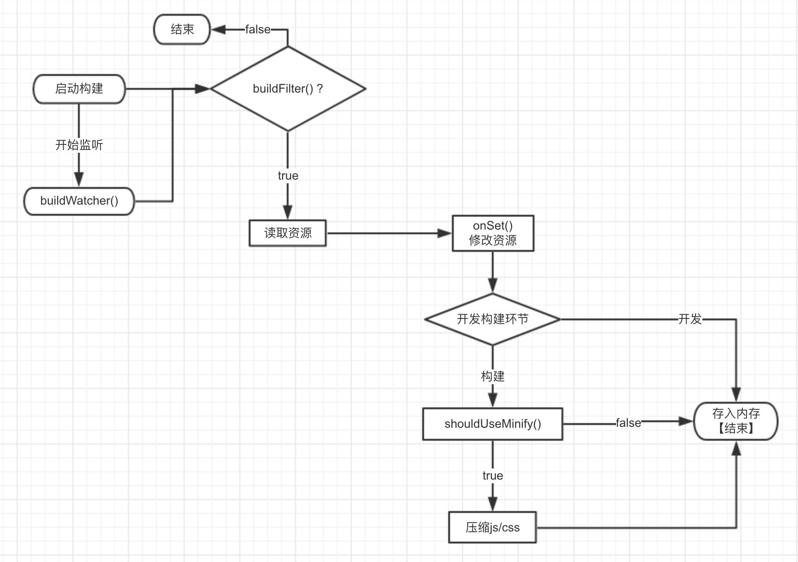
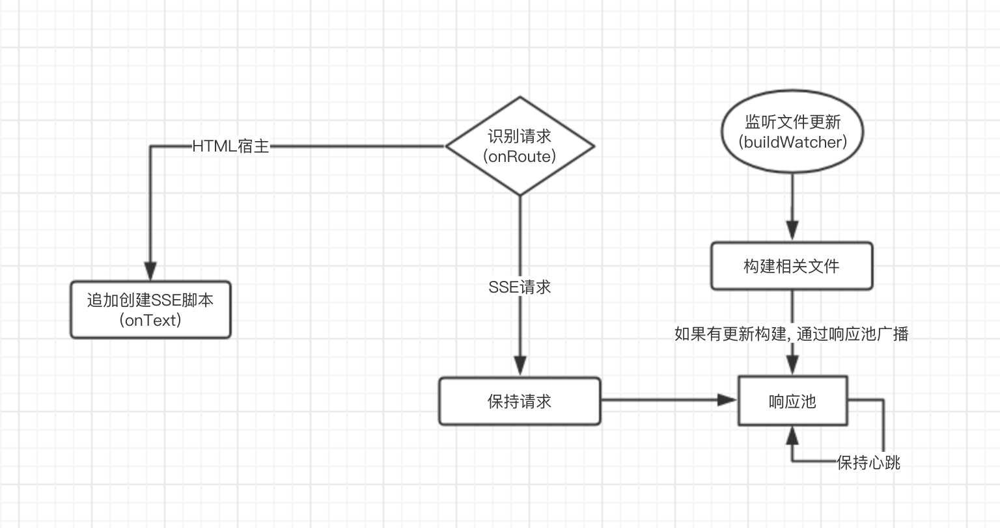
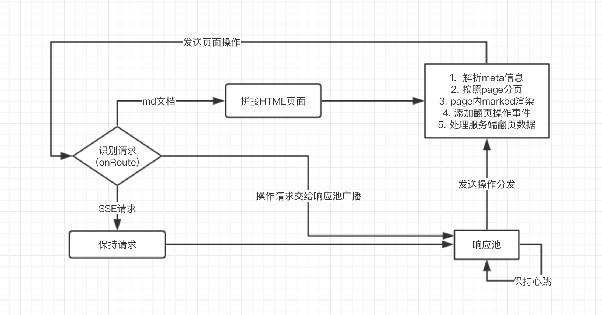

实现原理 - 输出
资源资源存储到文件系统
基于Node.js的前端开发服务器前端开发基本需求 & 日渐复杂的开发场景Serverlivereloadcompile & lintProxyUglify Minify Bundle前端开发环境变化历程的缩影Tree Shaking and Scope Hoistingf2e-server 更接近 FIS3 的方式
f2e-server 核心功能表资源加载到内存: 文件过滤和文件监听需要在资源加载流程中处理
资源资源存储到文件系统
HTTP-Server 对接持久化接口 & 新增接口
中间件模式: 中间件管理器实现各种接口的 链式(Promise链式)封装 onGet/onSet/buildFilter/outputFilter 同时支持build模式


onSet & onGet
其他中间件babel 【内置】Babel 编译支持less 【内置】Less 编译支持template 【安装依赖】Lodash template 实现markdown marked 封装proxy 基于 request 实现代理qrcode 一个简单的字符串转二维码图片的接口实现typescript TypeScript 单文件编译实现sass Sass 编译支持rollup Rollup 支持webpack Webpackauthority 公司内部使用的轻量级 权限验证、权限-角色-用户管理 通用组件markdown-ppt MarkdownPPT 基于marked简单在线PPT演示MarkdownPPT 当前在线PPT实现原理